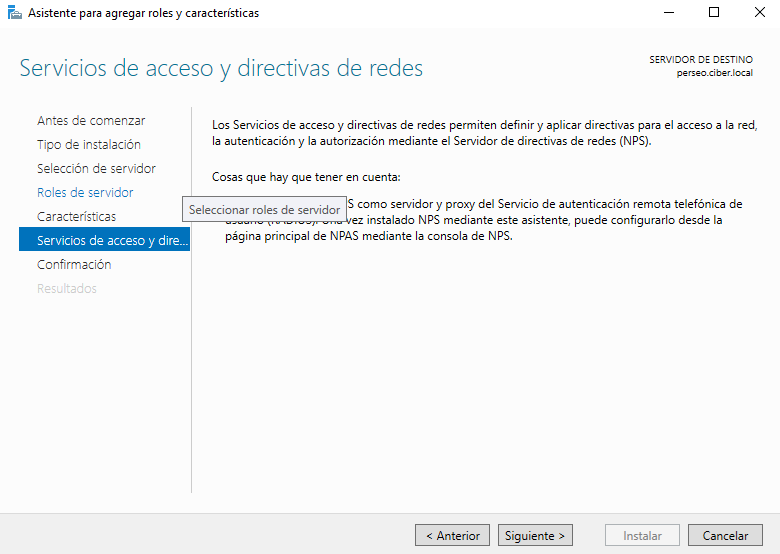
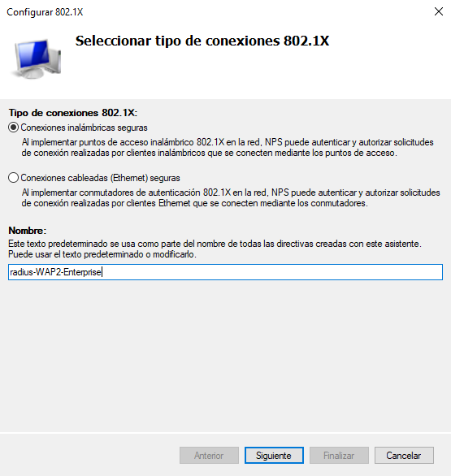
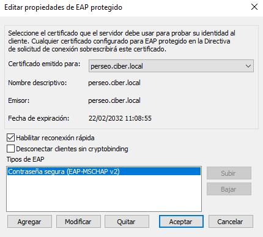
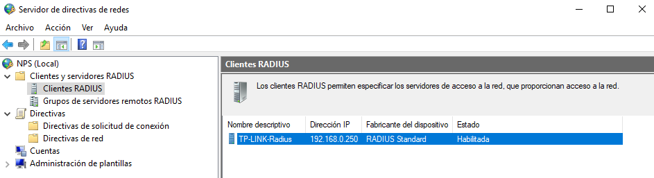
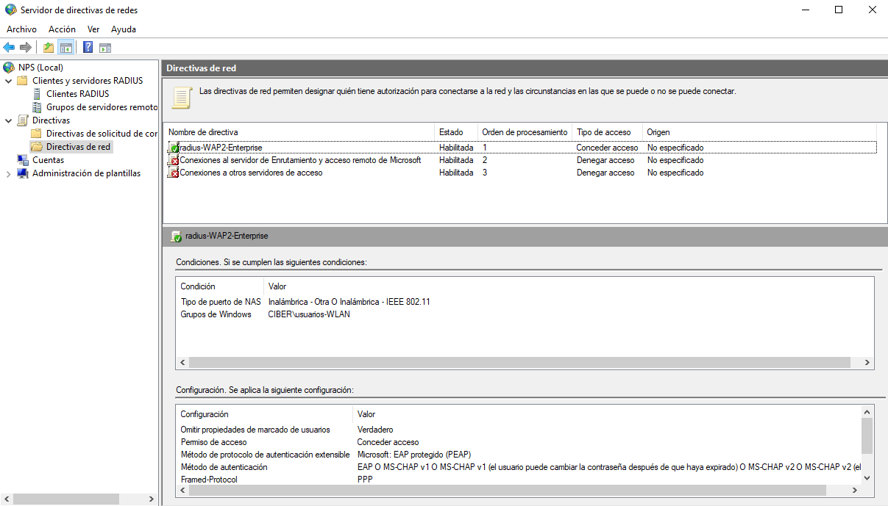

3.3.2 Instalar y configurar NPS/Radius en Windows Server
1. Instalar NPS/Radius en Windows Server
La siguiente etapa es instalar y configurar NPS/Radius, es decir, instalar y realizar el despliegue de roles Radius.
En primer lugar, se inicia el Administrador del servidor y en Administrar (arriba a la derecha) hay que marcar Agregar roles y características.
Figura 1. Seleccionar 'Agregar roles y características'
Figura 2. Pantalla inicial del asistente.
Una vez abierto el asistente, hacemos clic en Siguiente, aparece una nueva pantalla donde 'Marcamos' nuestro servidor de la lista. Dado que sólo tenemos un servidor en la red, sólo aparece el nuestro.
Figura 3. Selección del servidor de destino.
A continuación, pulsamos Siguiente y aparece una nueva pantalla donde hay que seleccionar el rol 'Servicios de acceso y directivas de redes'. Es frecuente que la instalación de un rol traiga aparejada la necesidad de instalar algunas herramientas y utilidades llamadas características. El asistente muestra con detalle qué va a necesitar de forma complementaria. Hacemos clic sobre el botón Agregar características.
Figura 4. Rol y características seleccionadas.
El asistente lleva a una pantalla, sin otra función más que introducir la funcionalidad que se ha incorporado al servidor. Hay que hacer pulsar el botón Siguiente para que comience el proceso de instalación propiamente dicho.
Figura 5. Funcionalidad lista para instalar.
A continuación, el asistente muestra una nueva pantalla informativa sobre Servicios de acceso y directivas de redes donde se da una breve explicación de las funciones del rol y desde dónde se puede configurar. Para continuar, hay que pulsar Siguiente.
Figura 6. Pantalla informativa.
Aparece una nueva pantalla para confirmar la selección efectuada y donde hay que chequear si se quiere en 'Reiniciar automáticamente el servidor de destino en caso necesario'.
Figura 7. Confirmación.
Para comenzar con el proceso de instalación del rol, hay que pulsar el botón 'Instalar'. Una vez finalice la instalación, se podrá cerrar el asistente.
Figura 8. Proceso de instalación del rol.
El proceso anterior realizado mediante la herramienta gráfica se puede simplificar realizando la instalación desde PowerShell con credenciales de administrador. El comando a utilizar es el siguiente:
PS C:\>Install-WindowsFeature NPAS -IncludeManagementTools
Por defecto, NPS escucha el tráfico RADIUS en los puertos 1812, 1813, 1645 y 1646 en todos los adaptadores de red instalados. Si el Firewall de Windows con seguridad avanzada está activado al instalar NPS, se crean automáticamente reglas para estos puertos.
Figura 9. Reglas creadas automáticamente para NPS.
En el caso de que el sistema no creara las reglas, habría que crearlas para permitir el tráfico de entrada en esos puertos.
A nivel de data carving, NPS tiene la funcionalidad de almacenamiento de todos los registros generados por las cuentas en:
- Una base de datos en un servidor SQL
- En un archivo de texto en la maquina local, por defecto situado en C:\Windows\System32\LogFiles
- Simultáneamente en un servidor SQL y un archivo de texto.
Desde el punto de vista de la seguridad, RADIUS tiene debilidades relacionadas con uso del protocolo UDP. Su arquitectura le hace propenso a:
- Ataques de fuerza bruta sobre las credenciales del usuario.
- Denegación de servicio.
- Ataques de repetición de sesión.
- Inyección de paquetes.
2. Registrar el servidor de directivas de redes en Active Directory
Una vez se ha instalado el rol, toca realizar el registro del servidor de directiva de redes (NPS) en Active Directory para que tengan permiso de leer las propiedades de acceso telefónico de las cuentas de usuario durante el proceso de autorización. Al registrar un NPS, se agrega el servidor al grupo Servidores RAS e IAS en Active Directory.
Para abrir el Servidor de directivas de redes se puede realizar de diferentes formas:
- Desde el Administrador del servidor, en Herramientas.
- Utilizando Herramientas administrativas de Windows desde el menú inicio.
- o desde PowerShell:
Para este caso, se ejecuta el comando nps.msc dese PowerShell.
PS C:\>nps.msc
Registrar NPS en AD
Esta herramienta, como casi todas las basadas en Microsoft Management Console (MMC) está estructurada con un panel izquierdo con estructura en árbol para navegar por las opciones, un panel central con el detalle de lo marcado en el izquierdo y tenemos la posibilidad de agregar un panel derecho con acciones a realizar. Hay que seleccionar el nodo NPS del árbol y hacer click con el botón derecho del ratón para que aparezca un menú emergente donde hay que seleccionar la opción 'Registrar servidor en Active Directory', de esta forma, se autoriza al servidor NPS para usar Active Directory en la autenticación de usuarios y grupos, además, esto permite el control de usuarios a través de las propiedades de marcado.
Autorización
El sistema pregunta si se desea autorizar al equipo el leer las propiedades de marcado de los usuarios, como respuesta, hay que pulsar 'Aceptar'. Una vez pulsado aceptar, aparece una ventana donde se confirma la autorización.
Comprobación
Si se accede a la consola de 'Usuarios y equipos de Active Dircetory', sobre el contenedor Users, se puede ver el Grupo de seguridad de Dominio local Servidores RAS e IAS y como miembro, se tiene el servidor RADIUS que se acaba de instalar, para este escenario es PERSEO.
.
3. Configurar NPS
A continuación, se realiza el despliegue de clientes RADIUS y configuración de directivas de red para conexiones inalámbricas en el servidor RADIUS-NPS que se acaba de instalar. Para ello, hay que abrir el 'Servidor de directivas de redes' de alguna de las siguientes maneras:
Para este escenario, se va a implementar un Servidor RADIUS para conexiones inalámbricas 802.1.x, donde se desea controlar el acceso a la red Wireless. Este perfil está destinado a securizar las redes internas de una organización ya sea usando algún tipo de cableado o conexión inalámbrica. Los perfiles de servidor existentes son:
- Para conexiones VPN o de acceso telefónico.
- Para conexiones cableadas o inalámbricas 802.1X.
Figura 10. Perfiles de servidor existentes.
Para este caso, hay que hacer clic sobre Configurar 802.1X.
{kind=link}
Figura 11. Configurar 802.1X.
A continuación, el asistente muestra una pantalla donde hay que seleccionar el tipo de conexiones 802.1X, para este escenario, se selecciona la primera opción 'Conexiones inalámbricas seguras' y se rellena un nombre para la directiva, como ejemplo, se pone radius-WAP2-Enterprise. Para continuar hay que pulsar Siguiente.

Figura 12. Seleccionar el tipo de conexión 802.1X.
En el siguiente paso hay que indicar los clientes RADIUS que se desean incluir. Para este escenario, se va a agregar el punto de acceso que se configurará en la etapa 3 y para ello, hay que pulsar el botón 'Agregar'. Aparece una nueva pantalla donde se debe rellenar lo siguiente:
- Un nombre para el cliente, para este caso se pone TP-LINK-Radius.
- La dirección IP que se debe validar. Para este caso, la ip del TP-LINK es 192.168.0.250.
- Generar o introducir un secreto compartido. (advierte de que algunos clientes RADIUS no soportan claves largas). Para este caso, se indica de forma manual el secreto compartido: eeepsr10 que es el que se configurará también el equipo router TP-LINK.
Fuente
NOTA: Este proceso hay que realizarlo con cada cliente RADIUS que se quiera añadir a la infraestructura, para este caso sólo se tiene uno, pero podrían haber muchos más.
| Figura 13. Agregar cliente Radius. | Figura 14. Configuración del cliente Radius a agregar. |
Para continuar, hay que pulsar el botón 'Aceptar' y como se puede observar en la figura inferior ya el cliente radius recién añadido.
Figura 15. Cliente RADIUS agregado.
Para continuar, hay que pulsar 'Siguiente'. Aparece una nueva ventana donde hay que seleccionar el tipo de EAP para esta directiva (ver figura inferior), es decir, el método de autenticación. Se configura el método de autenticación Microsoft: EAP protegido (PEAP). A continuación se pulsa 'Configurar' para seleccionar un certificado para probar la identidad del servidor RADIUS a los clientes. Aquí es donde se va a utilizar el certificado de equipo que se ha emitido anteriormente en la etapa 1.
IMPORTANTE: Los clientes deben confiar en ese certificado, de lo contrario, el usuario no podrá conectarse a la red inalámbrica.
Para continuar, hay que hacer clic en Siguiente.
|  | |
|
Figura 16. Selección del tipo de EAP. |
Figura 17. Editar las propiedades de EAP protegido. |
NPS admite métodos de autenticación basados en contraseña y basados en certificados. Hay que tener en consideración qué métodos admite el cliente para seleccionar uno u otro y no solo el propio interés o la seguridad. Podría ser necesario configurar un tipo para cada una.
Los métodos de autenticación basados en certificados tienen la ventaja de proporcionar una gran seguridad, pero requieren más trabajo de implementación.
- Para EAP-TLS se necesita montar una PKI y eso conllevaría a una autenticación con certificados tanto de cliente como de servidor. Se suele utilizar para VPN por su robusta seguridad.
- Con PEAP-MS-CHAP v2 se usa un certificado para la autenticación del servidor y credenciales para los usuarios. No requiere PKI y además se podría utilizar Active Directory servicios de Certificate Server (AD CS) para la inscripción de certificados en NPS. PEAP-MS-CHAP v2 está especialmente diseñada para portátiles y otros dispositivos. Permite una reconexión rápida sin necesitar volver a autenticar. Por eso se usa más como método de autenticación para las conexiones inalámbricas.
MS-CHAP v2 proporciona autenticación mutua, claves de cifrado de datos iniciales más fuertes y claves de cifrado diferentes para el envío y la recepción. La clave criptográfica se basa siempre en la contraseña del usuario y en una cadena de desafío aleatoria. Cada vez que se autentifica, se utiliza una nueva cadena.
La autenticación con éxito de PEAP-MS-CHAP v2 tiene dos partes principales:
- El cliente autentica el NPS. Durante esta fase de autenticación mutua, el NPS envía su certificado de servidor al equipo del cliente para que el cliente pueda verificar la identidad del NPS con el certificado. Para autenticar correctamente el NPS, el equipo cliente debe confiar en la CA que emitió el certificado NPS. El cliente confía en esta CA cuando el certificado de la CA está presente en el almacén de certificados de las Autoridades de certificación raíz de confianza en el equipo cliente.
- El NPS autentica al usuario. Una vez que el cliente autentica correctamente el NPS, el cliente envía las credenciales basadas en contraseña del usuario al NPS, que verifica las credenciales del usuario con la base de datos de cuentas de usuario en Active Directory Domain Services (AD DS).
Si las credenciales son válidas y la autenticación se realiza correctamente, el NPS comienza la fase de autorización del procesamiento de la solicitud de conexión. Si las credenciales no son válidas y la autenticación falla, NPS envía un mensaje de rechazo de acceso y se deniega la solicitud de conexión.
Fuente:
En el siguiente paso, el asistente solicita indicar los grupos que se verán afectados por esta configuración, es decir, los grupos de usuarios que tendrán acceso a la red Wifi. Es evidente que se trata de una buena práctica, pues permite sacar o meter de ese grupo a los usuarios que se desean que tengan acceso a la red Wifi. Si no se rellena ninguno, afectaría a todos los usuarios del dominio.
Se crea el grupo radius-WAP2 con el usuario que tendrá acceso a la red wifi.
Figura 18. Grupo acceso a la WLAN.
A continuación, Se agrega el grupo 'usuarios-WLAN' que se ha creado.
Figura 19. Adición del grupo radius-WPA2.
Para continuar, hay que pulsar 'Siguiente' y aparece una nueva pantalla relacionada con la configuración de controles de tráfico (atributos de túnel RADIUS) para permitir y denegar el tráfico a los usuarios en función de sus VLAN asignadas. Se deja tal cual está, y se hace clic en Siguiente.
Configurar Controles de tráfico - Uso de virtual LANs (VLANs) y listas de control de acceso (ACLs) para el control del tráfico de red
Figura 20. Configurar controles de tráfico.
El asistente muestra un resumen de los realizado donde si se pulsa el enlace 'Detalles de configuración', el asistente ofrece la información más detallada. Para finalizar el proceso, hay que pulsar el botón 'Finalizar'.
| Figura 21. Resumen de la configuración. | Figura 22. Informe detallado de la configuración. |
Figura . Filtros de entrada para IPv4.
Como se puede observar, ya se tiene el cliente Radius.

Figura 23. Cliente Radius configurado.
Además, el asistente ha creado una Política de solicitud de conexión y una Política de red. Si se accede a alguna de ellas, se pueden realizar cambios en su configuración.
|  | |
| Figura 24. Directiva de red configurada. | Figura 25. Directiva de solicitud de conexión. |
De forma predeterminada, el asistente configura la directiva de solicitud de conexión para procesar la solicitud de autenticación localmente en el servidor.
Directiva de solicitud de conexión
Figura 26. Procesar la solicitud de autenticación localmente en el servidor.
De forma predeterminada, el asistente configura la directiva Política de red. Se dejará tal cual como el asistente la ha configurado.
Las políticas de red son conjuntos de condiciones, restricciones y configuraciones que permiten designar quién está autorizado para conectarse a la red y las circunstancias bajo las cuales pueden o no conectarse.
Figura 27. Directiva de red.
Configurar Contabilidad (Accounting)
También es posible configurar Contabilidad para el servidor NPS, donde se puede establecer la ruta donde guardar el fichero de log, registrar una base de datos para almacenar la contabilidad, etcétera.

Figura 28. Panel de configuración de la contabilidad.
Comprobación de las acciones realizadas
Para obtener información de todos los clientes Radius que se han implementado, ejecutamos el cmdlet Get-NpsRadiusClient:
PS C:\>Get-NpsRadiusClient
Figura 29. Información del cliente radius.
4. Referencias
- En caso de necesitar ayuda para la instalación de estos requisitos previos, a continuación tienes una guía completa de instalación de un servidor Windows Server 2016, que es totalmente traducible a la versión 2019.
Obra publicada con Licencia Creative Commons Reconocimiento No comercial Compartir igual 4.0